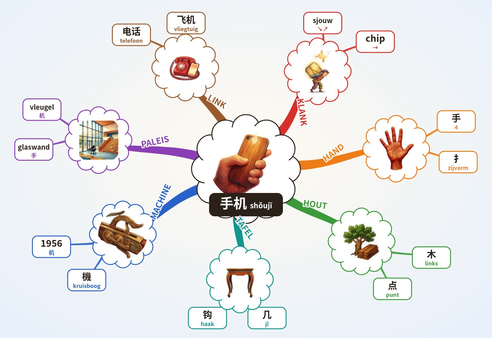

WOORD DIEPTE 4.5 · testkaart
手机 shǒujī · 3+1 · mobiele telefoon
Formule
Chinees: Mandarijn, moedertaalstem. NL/EN/ES: klank-haken, geen vertaling.
Klank-haken NL · EN · ES
NL sjouw ↘↗ + chip →: “Mijn hand sjouwt een chip: mijn telefoon.”
EN show? ↘↗ + gee! →: “Show it in your hand. Gee, a phone!”
ES ¿show? ↘↗ + chip →: “Un show en la mano con un chip: el móvil.”
↘↗ = 3e toon: laag, zakt en veert terug (shǒu). → = 1e toon: hoog en vlak, lang aanhouden (jī). Pinyin j klinkt als een zachte “dj”, zonder ademstoot.
Paleis · Lorentz Lyceum, 10 stops
- Perron Arnhem Zuid station op het viaduct, 2 perrons
- Tunnel en trap onder het spoor, street art (?)
- Oversteek Metamorfosenallee met verkeerslichten
- Fietspad langs de Metamorfosenallee
- Haag en groenstrook rond het terrein
- Fietsenstalling op het terrein, ingang vanaf de allee
- Schoolplein zuidkant, picknicktafels, Cruijff-court
- Glaswand aula grote glazen buitenwand · 手
- Tribune en vleugel brede zittrap in de aula · 机
- Atrium → gymzaal gymzaal op de 1e verdieping
O'Brien: 8 IK sla een reuzenhand plat tegen de glaswand en sjouw hem omhoog. Het glas dreunt koud. Shǒu ↘↗. 9 Op de houten tribune (木) staat de vleugel; het tafeltje (几) erop piept: chiiip, jī →. Ik ruik vernis en proef metaal.
Alleen echte kenmerken (Makelpunt, Klaassen, Gelderlander, Wikipedia). (?) = niet zeker: plek van de street art en de route door de tunnel.
Mindmap (Buzan)

Buzan: centraal beeld · gebogen takken, dik bij het midden · 1 woord per lijn · beeld per tak · kleur per tak · subtakken · radiaal, met de klok mee vanaf KLANK.
3 schrift · streken
手 hand (heel teken; links vaak 扌) · 木 hout, betekenisdeel van 机 · 几 jī, klankdeel van 机
Oefen met je vinger
Tik op Oefen en teken streek 1.
Streken 1–4 · namen
Opbouw · 手 4 streken · 机 = 木 4 + 几 2
Rood = de nieuwe streek.
Streekvragen
Pictogram
- 手: open hand met gespreide vingers en pols
- 机: 木 hout + 几 tafeltje; precieze oervorm onbekend
Verbindingen (andere woorden)
Geschiedenis
Twijfel
4 beeld
IK houd een machine in mijn hand. (klank: sjouw een chip)